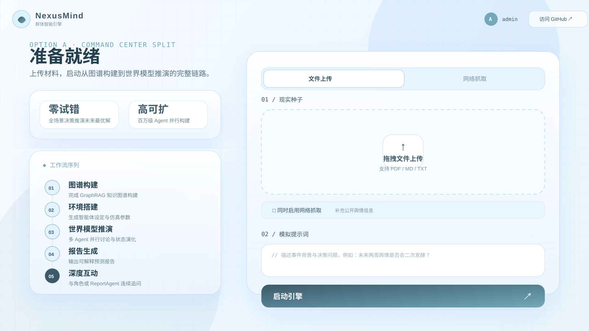
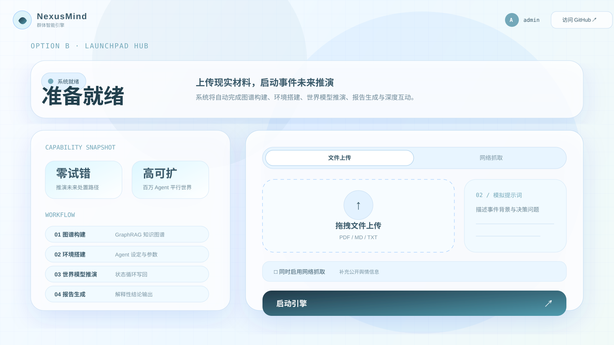
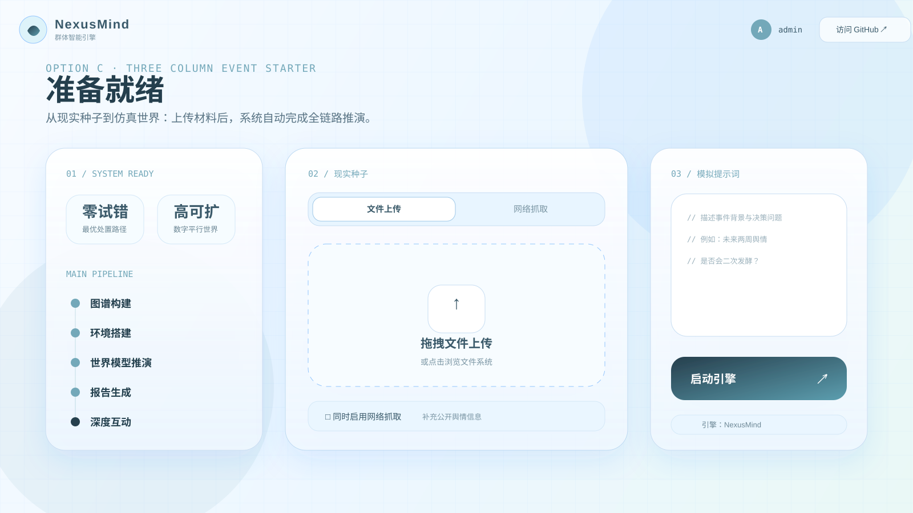

方案 A：左右指挥台布局

最接近当前页面，演示稳定，适合小改升级。
方案 B：顶部启动台布局

标题区更强，右侧操作更集中，比赛录屏冲击力更强。
方案 C：三栏事件启动器

结构打散重构，流程、上传、提示词三块分离，信息最清楚。
这只是静态视觉稿：不接后端、不接接口、不改上传、路由或模拟启动逻辑。选中后再把对应布局落到现有前端组件里。

最接近当前页面，演示稳定，适合小改升级。

标题区更强，右侧操作更集中，比赛录屏冲击力更强。

结构打散重构，流程、上传、提示词三块分离，信息最清楚。